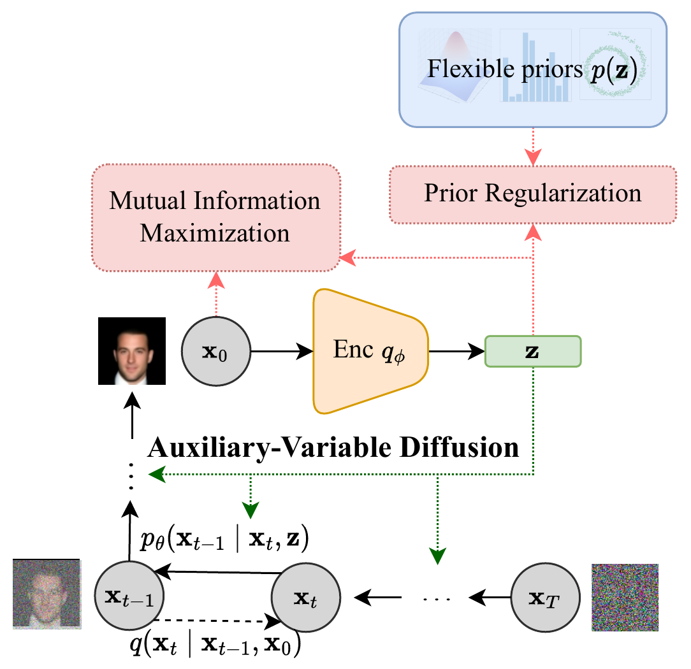
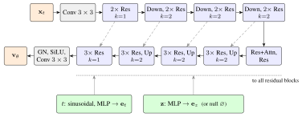
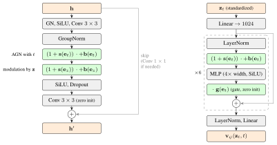
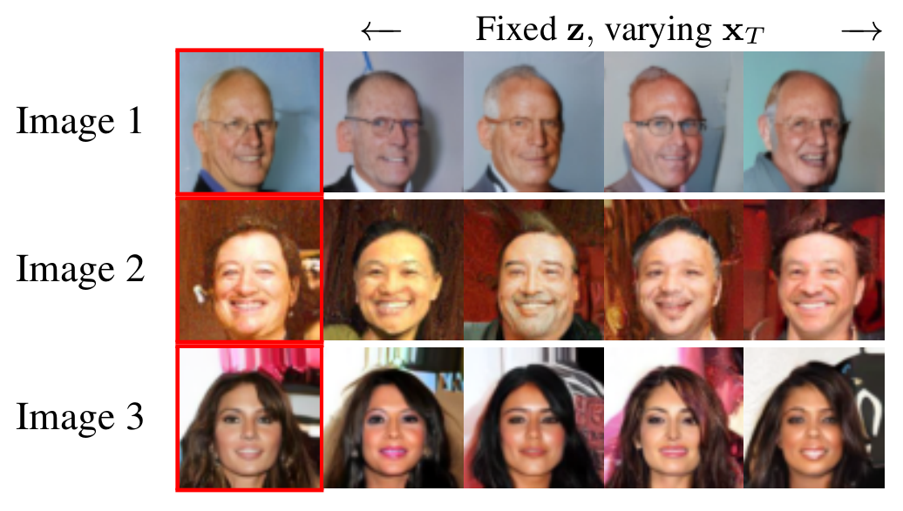
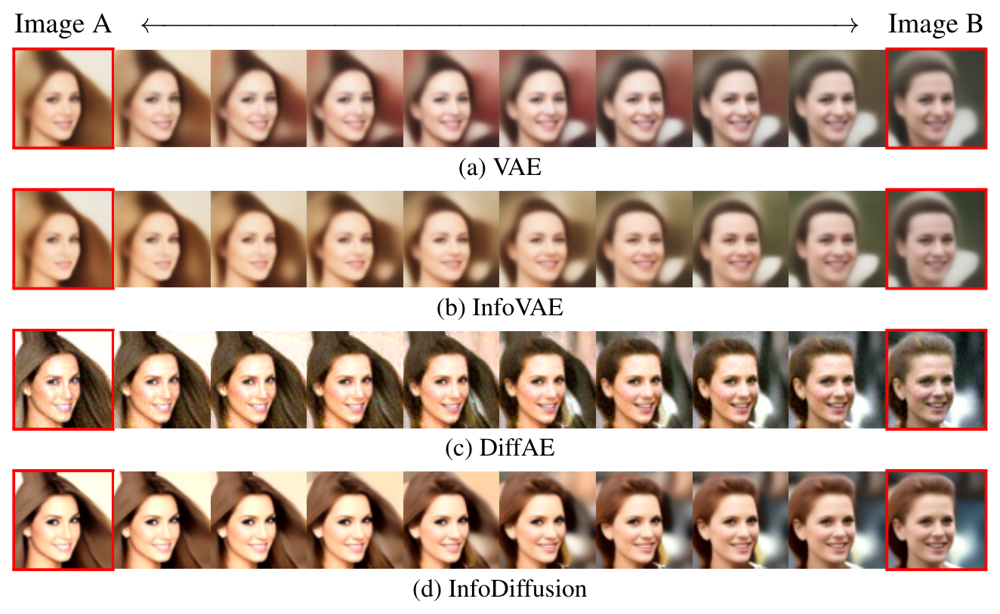
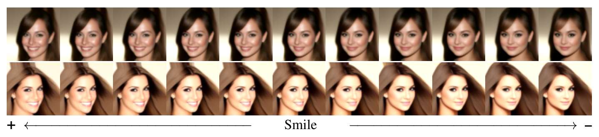

While diffusion models excel at generating high-quality samples, their latent variables typically lack semantic meaning and are not suitable for representation learning. Here, we propose InfoDiffusion, an algorithm that augments diffusion models with low-dimensional latent variables that capture high-level factors of variation in the data. InfoDiffusion relies on a learning objective regularized with the mutual information between observed and hidden variables, which is designed to improve latent space quality and to prevent the latents from being ignored by expressive diffusion-based decoders. Empirically, we find that InfoDiffusion learns disentangled and human-interpretable latent representations that are competitive with state-of-the-art generative and contrastive methods, while retaining the high sample quality of diffusion models. Our method enables manipulating the attributes of generated images and has the potential to assist tasks that require exploring a learned latent space to generate quality samples, e.g., generative design.
Diffusion models produce high-quality samples but lack an interpretable low-dimensional latent space. InfoDiffusion adds a low-dimensional auxiliary latent \(\bz\), with a prior \(p(\bz)\), on which every denoising step is conditioned:
\[ p(\bx_{0:T}, \bz) = p(\bx_T)\, p(\bz) \prod_{t=1}^{T} p_\theta(\bx_{t-1} \mid \bx_t, \bz). \]The noising process does not depend on \(\bz\): \(\bz\) is a representation of the input, not a control variable of diffusion. An encoder \(q_\phi(\bz \mid \bx_0)\) infers it, and applying variational inference twice gives an ELBO \(\mathcal{L}_D\) for the model. The prior can be a simple Gaussian, encode domain knowledge (e.g., a mixture of \(K\) components for \(K\) classes), or be discrete.

Auxiliary latents face two risks: an expressive decoder may ignore a low-dimensional \(\bz\) and generate \(\bx_{t-1}\) unconditionally, and the aggregate posterior \(q_\phi(\bz) = \mathbb{E}_{q(\bx_0)}[q_\phi(\bz\mid\bx_0)]\) may fail to match the prior, which degrades both sampling and the latent representation. InfoDiffusion counters them with a mutual-information term and a prior regularizer:
\[ \mathbb{E}_{q(\bx_0)}\big[\mathcal{L}_D(\bx_0)\big] + \zeta \cdot \MI_{\bx_0,\bz} - \beta \cdot \D\big(q_\phi(\bz)\,\|\,p(\bz)\big). \]Both regularizers are intractable. Following InfoVAE, with \(\lambda := \beta + 1\) the objective can be rewritten in a tractable form:
\[ \mathcal{L}_I = \mathcal{L}_{\text{denoise}} - (1-\zeta)\, \mathbb{E}_{q(\bx_0)}\big[\KL\big(q_\phi(\bz\mid\bx_0)\,\|\,p(\bz)\big)\big] - (\lambda+\zeta-1)\, \KL\big(q_\phi(\bz)\,\|\,p(\bz)\big), \]where \(\mathcal{L}_{\text{denoise}}\) collects the reconstruction and denoising terms of the ELBO. The KL divergence between \(q_\phi(\bz)\) and \(p(\bz)\) can be replaced by any strict divergence \(\D\) without changing the global optimum, under conditions given in the paper (including \(\zeta \le 1\) and \(\lambda + \zeta - 1 \ge 0\)). We use the maximum mean discrepancy (MMD) with a sum of inverse multiquadratic kernels.
Special cases. With one diffusion step (\(T = 1\)), InfoDiffusion is an InfoVAE, up to the decoder architecture; adding \(\lambda = 1 - \zeta\) gives a \(\beta\)-VAE with \(\beta_{\text{VAE}} = 1 - \zeta\), and \(\zeta = 1\) with an adversarial or MMD divergence gives an adversarial or Wasserstein auto-encoder. With \(\zeta = 1\) and \(\lambda = 0\), both regularizers vanish and a deterministic encoder recovers DiffAE.
The main setting, \((\lambda, \zeta) = (0.1, 0.9)\), satisfies \(\lambda = 1 - \zeta\): the marginal divergence term vanishes, and the objective is that of a \(\beta\)-VAE with \(\beta_{\text{VAE}} = 0.1\) and a diffusion decoder.
| Semantic latents | Discrete latents | Custom prior | Max MI | HQ samples | |
|---|---|---|---|---|---|
| AE | ✗ | ✗ | ✗ | ✗ | ✗ |
| VAE | ✓ | ✓ | ✓ | ✗ | ✗ |
| \(\beta\)-VAE | ✓ | ✓ | ✓ | ✗ | ✗ |
| AAE | ✓ | ✓ | ✓ | ✓ | ✗ |
| InfoVAE | ✓ | ✓ | ✓ | ✓ | ✗ |
| DDPM | ✗ | ✗ | ✗ | ✗ | ✓ |
| DiffAE | ✓ | ✗ | ✗ | ✗ | ✓ |
| InfoDiffusion | ✓ | ✓ | ✓ | ✓ | ✓ |
Auto-encoder (top) and diffusion (bottom) frameworks compared with InfoDiffusion.
Continuous-time decoder. We use the linear noising process \(\bx_t = (1-t)\,\bx_0 + t\,\beps\), \(t \in [0, 1]\), of rectified flow, and the network predicts the velocity \(\bv_\theta(\bx_t, t, \bz) \approx \beps - \bx_0\). The denoising terms of the ELBO then reduce to a weighted regression loss,
\[ \mathbb{E}_{t,\beps}\Big[\, w(t)\, \big\| \bv_\theta(\bx_t, t, \bz) - (\beps - \bx_0) \big\|^2 \Big], \]where the weighting \(w(t)\) is set by the distribution of \(t\) (logit-normal on most datasets). The decoder is an ADM-style U-Net. A two-layer MLP embeds \(\bz\), and the embedding modulates every residual block after the time-conditioned adaptive group normalization: \(\bh \leftarrow (1+\bs(\bz)) \cdot \mathrm{AGN}(\bh, t) + \bb(\bz)\).


Encoder. The downsampling half of a U-Net, followed by a linear head on the spatially averaged or flattened final feature map. During training it sees a random resized crop of \(\bx_0\) (70–100% of the side, except on 3DShapes), while the decoder denoises the full image. For \(\zeta = 1\) the encoder is deterministic; for \(\zeta < 1\), as in the main setting, \(q_\phi(\bz\mid\bx_0)\) is a diagonal Gaussian. The noise \(\bx_T\) of an image is inferred by integrating the probability-flow ODE conditioned on its \(\bz\).
Sampling. We draw \(\bz\) either from the prior \(p(\bz)\) or from a learned latent prior, a flow-matching MLP fit to the encodings of the training images (as in DiffAE, a second generative model over \(\bz\)), and integrate the probability-flow ODE with Heun's method. Both samplers can use classifier-free guidance on \(\bz\): the generative models (\(d_z = 256\)) are trained with latent dropout (probability 0.1), and the guided velocity with weight \(w\) is
\[ \bv_\theta(\bx_t, t, \varnothing) + w\, \big( \bv_\theta(\bx_t, t, \bz) - \bv_\theta(\bx_t, t, \varnothing) \big). \]Discrete latents. Finite scalar quantization (FSQ) bounds and rounds each encoder output to \(L\) levels, \(z_i = \mathrm{round}(c \tanh h_i)/c\) with \(c = (L-1)/2\), with straight-through gradients and a uniform prior over the \(L^{d_z}\) codes. It needs neither a codebook nor auxiliary losses.
\(\bz\) captures high-level semantics. Decoding the inferred \(\bz\) of an image with different noise \(\bx_T\) changes its lower-level features, such as the background and hair style.

We encode two images into \((\bz, \bx_T)\) and decode 10 points along a path between them, interpolating \(\bz\) along a quarter circle and \(\bx_T\) spherically. InfoDiffusion combines the smooth interpolation of variational methods with the sample quality of diffusion models.

The learned latents contain disentangled components: for example, one dimension of \(\bz\) controls smiling. For metrics of disentanglement, see the results below.

We compare InfoDiffusion to an AE, a VAE, a \(\beta\)-VAE, an InfoVAE and DiffAE on FashionMNIST, CIFAR10, FFHQ, CelebA and 3DShapes. InfoDiffusion uses \((\lambda, \zeta) = (0.1, 0.9)\). Latents are evaluated with \(d_z = 32\) models (\(d_z = 10\) on 3DShapes), and sample quality with \(d_z = 256\) models trained with latent dropout. Latent quality is the held-out accuracy or AUROC of a logistic-regression classifier trained on \(\bz\) (5-fold cross-validation); FID is computed with clean-FID from 10,000 samples against the training set. For InfoDiffusion, ± is the standard deviation over three training seeds. DiffAE is re-trained on every dataset with its official implementation, and the AE, VAE, \(\beta\)-VAE and InfoVAE on FFHQ; the remaining baseline results come from earlier runs with a separate training pipeline.
| FashionMNIST | CIFAR10 | FFHQ | ||||
|---|---|---|---|---|---|---|
| Method | Latent qual. ↑ | FID ↓ | Latent qual. ↑ | FID ↓ | Latent qual. ↑ | FID ↓ |
| AE | 0.819±0.003 | 62.9±2.1 | 0.336±0.005 | 169.4±2.4 | 0.532±0.002 | 316.7±0.4 |
| VAE | 0.796±0.002 | 63.4±1.6 | 0.342±0.004 | 177.2±3.2 | 0.488±0.002 | 307.7±0.1 |
| \(\beta\)-VAE | 0.779±0.004 | 66.9±1.8 | 0.253±0.003 | 183.3±3.1 | 0.510±0.001 | 222.6±0.2 |
| InfoVAE | 0.807±0.003 | 55.0±1.7 | 0.357±0.005 | 160.7±2.5 | 0.545±0.001 | 195.2±0.5 |
| DiffAE | 0.822±0.006 | 5.6±0.1 | 0.442±0.004 | 34.1±0.1 | 0.565±0.001 | 12.1±0.1 |
| InfoDiffusion | 0.856±0.004 | 22.5±0.6 | 0.461±0.003 | 36.2±1.1 | 0.628±0.002 | 19.8±0.4 |
| w/ guidance (\(w = 2\)) | 21.9±0.7 | 33.7±1.0 | 15.7±0.7 | |||
| w/ learned latent | 8.1±0.4 | 25.7±0.4 | 13.1±0.5 | |||
| w/ learned latent, \(w = 2\) | 6.8±0.7 | 21.3±0.7 | 9.8±0.3 | |||
Latent quality is classification accuracy (FashionMNIST, CIFAR10) or the average accuracy over age, gender and eyeglasses (FFHQ). InfoDiffusion rows without "learned latent" draw \(\bz \sim p(\bz)\); \(w\) is the guidance weight on \(\bz\). Bold marks the best and underline the second-best value. For the baselines, ± is over cross-validation folds (latent quality) or sample sets (FID). DiffAE and the FFHQ entries of the other baselines are re-trained; the remaining baseline entries come from earlier runs.
The compact latents of InfoDiffusion are the most informative of labels on all three datasets. With latents drawn from the learned latent prior and guidance on \(\bz\), it attains the lowest FID on CIFAR10 and FFHQ and the second lowest on FashionMNIST, after DiffAE.
| 3DShapes | CelebA | |||||
|---|---|---|---|---|---|---|
| Method | DCI ↑ | Image qual. | TAD ↑ | Attrs ↑ | Latent qual. ↑ | FID ↓ |
| AE | 0.219±0.001 | ✗ | 0.042±0.004 | 1.0±0.0 | 0.759±0.003 | 90.4±1.8 |
| VAE | 0.276±0.001 | ✗ | 0.000±0.000 | 0.0±0.0 | 0.770±0.002 | 94.3±2.8 |
| \(\beta\)-VAE | 0.281±0.001 | ✗ | 0.088±0.051 | 1.6±0.8 | 0.699±0.001 | 99.8±2.4 |
| InfoVAE | 0.134±0.001 | ✗ | 0.000±0.000 | 0.0±0.0 | 0.757±0.003 | 77.8±1.6 |
| DiffAE | 0.177±0.001 | ✓ | 0.114±0.033 | 2.8±0.4 | 0.817±0.001 | 8.4±0.1 |
| InfoDiffusion | 0.296±0.057 | ✗ | 0.439±0.134 | 5.7±0.6 | 0.844±0.005 | 12.1±0.2 |
| w/ guidance (\(w = 2\)) | 11.1±0.3 | |||||
| w/ learned latent | ✓ | 7.6±0.2 | ||||
| w/ learned latent, \(w = 2\) | 6.3±0.2 | |||||
DCI: disentanglement term of the DCI score. Image quality on 3DShapes is judged from 16 samples, drawn with \(\bz \sim p(\bz)\) (first row) or from the learned latent prior. An attribute is captured if some dimension of \(\bz\) detects it with AUROC \(\ge 0.75\); TAD sums, over the captured attributes, the AUROC gap between the two most predictive dimensions, and Attrs counts them. CelebA latent quality is the AUROC averaged over the 40 attributes. DiffAE is re-trained; the other baseline entries come from earlier runs.
On 3DShapes, InfoDiffusion attains the highest DCI disentanglement score (0.296), although the \(\beta\)-VAE and the VAE (0.281 and 0.276) are within one standard deviation across seeds. On CelebA, it captures the most attributes (5.7 on average) with the highest TAD (0.439), while also giving the most informative latents and, with the learned latent prior and guidance, the lowest FID.
With FSQ latents on CelebA (\(d_z = 32\), \(L = 5\) levels, a uniform prior over \(5^{32}\) codes), latent quality is comparable to that of continuous latents: an average AUROC of 0.849 ± 0.003, a TAD of 0.370 ± 0.240 and 5.6 captured attributes over three seeds, compared with 0.844, 0.439 and 5.7 for continuous InfoDiffusion latents.
| CelebA | Gen. | Dim. | TAD ↑ | Latent qual. ↑ |
|---|---|---|---|---|
| SimCLR† | ✗ | 2048 | 0.192±0.015 | 0.812±0.003 |
| MoCo-v2† | ✗ | 2048 | 0.279±0.025 | 0.846±0.001 |
| DINO† | ✗ | 384 | 0.000±0.000 | 0.592±0.003 |
| InfoDiffusion | ✓ | 32 | 0.439±0.134 | 0.844±0.005 |
| CelebA, 32 dims | Gen. | TAD ↑ | Attrs ↑ | Latent qual. ↑ |
|---|---|---|---|---|
| SimCLR* | ✗ | 0.062±0.005 | 2.6±0.5 | 0.757±0.002 |
| PDAE‡ | ✓ | 0.009±0.001 | 1.0±0.0 | 0.767±0.003 |
| InfoDiffusion | ✓ | 0.439±0.134 | 5.7±0.6 | 0.844±0.005 |
Gen.: whether the model is generative. Dim.: latent dimension. † Weights from the method's PyTorch repository. * Pretrained SimCLR encoder fine-tuned with an added dense layer that projects to 32 dimensions. ‡ Trained by us with the baseline's codebase, in earlier runs.
InfoDiffusion's 32-dimensional latents are comparable to, and in some cases better than, the much larger representations of contrastive methods, and InfoDiffusion is also a generative model. At the same latent size, it outperforms a fine-tuned SimCLR encoder and PDAE, an auto-encoder built on a pretrained diffusion model, on both disentanglement and latent quality.
Regularization coefficients. Among the settings we evaluate, \((\lambda, \zeta) = (0.1, 0.9)\) gives the most disentangled CelebA latents and the best or second-best FID on all four natural-image datasets, with both samplers; its latents are less informative than those of \(\zeta = 1\) with small \(\lambda\) on CIFAR10 and CelebA. Values \(\zeta > 1\) make the objective unbounded, so we cap \(\zeta = 1\).
Sampling method. Decoding \(\bz \sim p(\bz)\) gives FIDs of 22.5, 36.2, 19.8 and 12.1 on FashionMNIST, CIFAR10, FFHQ and CelebA. The learned latent prior lowers them to 8.1, 25.7, 13.1 and 7.6, and guidance on \(\bz\) (\(w = 2\)) improves FID further with both samplers on all four datasets. The encodings are more concentrated than the prior, so prior draws often fall in regions the decoder has rarely seen.
Like DiffAE, InfoDiffusion obtains its best samples from a learned latent prior rather than from \(p(\bz)\) itself.
The first 64 samples for a fixed random seed, without any selection, from the main configuration (\((\lambda, \zeta) = (0.1, 0.9)\), \(d_z = 256\), first training seed) with guidance \(w = 2\). The FIDs are means over three training seeds. Samples with \(\bz \sim p(\bz)\) contain more distorted faces and less recognizable objects, in line with their higher FIDs.
The implementation described in the paper is available at github.com/yingheng-wang/InfoDiffusion, and the trained checkpoints are on Hugging Face.
@inproceedings{wang2023infodiffusion,
title = {{InfoDiffusion}: Representation Learning Using Information Maximizing Diffusion Models},
author = {Wang, Yingheng and Schiff, Yair and Gokaslan, Aaron and Pan, Weishen and Wang, Fei and De Sa, Christopher and Kuleshov, Volodymyr},
booktitle = {Proceedings of the 40th International Conference on Machine Learning},
series = {Proceedings of Machine Learning Research},
volume = {202},
pages = {36336--36354},
publisher = {PMLR},
year = {2023}
}